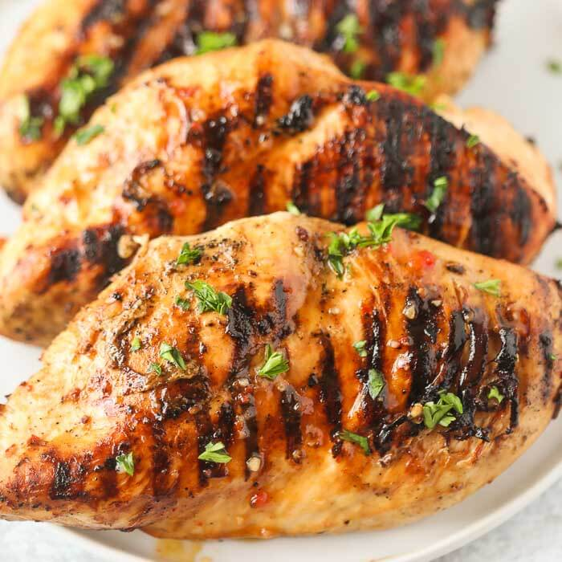

Home
Italian Chicken Marinade

Italian chicken marinade with all the best seasoning. Chicken is crispy and can be paired with other foods such as rice.
- 1 bottle Italian-style salad dressing
- 1 teaspoon garlic powder
- 1 teaspoon salt
- 4 skinless, boneless chicken breast halves
- Whisk salad dressing, garlic powder, and salt together in a shallow baking dish. Add chicken breast and turn to coat. Cover the dish with plastic wrap and marinate in the refrigerator, 4 hours to overnight.
- Preheat an outdoor grill for high heat and lightly oil the grate.
- Remove chicken from marinade and shake off excess; discard remaining marinade.
- Cook chicken on the preheated grill until no longer pink in the center and the juices run clear, about 7-8 minutes on each side. Instant read thermometer inserted into the center should read at least 165 degrees F.